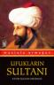
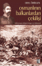

- Daha önceki haberlerde de bahsettiğimiz Javascript kütüphanesi Prototype'ın son sürümü çıkmış. Link
- Açık kaynak kod olurda açık kaynak tasarım olmaz mı? Olur işte link
- CSS3.0 yavaş yavaş geliyor. Opera CSS 3.0 destekliyor artık. Link
- Web sitenizi istatistik bilgilerini size sunan bir site Link
- Bir Web2.0 furyasıdır ...
20 Ocak 2007 Web'den seçme haberler
20 Ocak 2007 Web'den seçme haberler
- İlk haber kendi not defterimdeki bir düzenlemeden. Sitemde okuduğum kitapların listesini ve bir kaç satır özetini yayınlıyorum. CSS kısmına ağırlık verdiğim için kitapları anasayfada yayınlamama kararı aldım. Listelerde ve RSS'de olacak ancak anasayfada çıkmayacak bilginize
- AltıÜstü Tasarım sitesinde "Form Tasarımı Hakkında Birkaç ...
Üç Haseki Sultan - Yılmaz Öztuna
devamını oku Osmanlı Develetine farklı açıdan bakan bu kitap
gayet akıcı anlatımı ile bize güzel bilgiler veriyor. Kitabı nasıl
özetleyeceğimi tam anlat isterken kitabın son sayfasındaki aşağıdaki
alıntıyı yapmam yeterli olur diye düşündüm. "Zira kadın tesiri, Türk
tarihinde daima politik zararlara, devletin tahribine neden olmuştur."
İstisnalar müstesna... Yayıncıdan: Safiye Sultan... Kösem Mahpeyker ...
Osmanlı Develetine farklı açıdan bakan bu kitap
gayet akıcı anlatımı ile bize güzel bilgiler veriyor. Kitabı nasıl
özetleyeceğimi tam anlat isterken kitabın son sayfasındaki aşağıdaki
alıntıyı yapmam yeterli olur diye düşündüm. "Zira kadın tesiri, Türk
tarihinde daima politik zararlara, devletin tahribine neden olmuştur."
İstisnalar müstesna... Yayıncıdan: Safiye Sultan... Kösem Mahpeyker ...18 Ocak 2007 Web'den seçme haberler
18 Ocak 2007 Web'den seçme haberler
- Erişebilirlik açısından yapılan genel yapılan hatalar hakkında bir makale Link
- HTML 5 ve XHTML 2.0 çalışmaları başlamış. Link
- WordPress 2.0.7 versiyonu çıktı. PHP güvenlik açığı ve Feedburner sorunu yeni versiyonun çıkmasına neden olmuş. Link
- Internet Explorer 7 Türkçe çıktı. Ayrıca ...
15 Ocak 2007 web'den seçme haberler
15 Ocak 2007 web'den seçme haberler
- W3C yeni CSS validator'un unu Aralık ortalarında duyurdu Fuji kod adlı bu doğrulayıcıya bir göz atın linki
- Türkiye'nin ilk sanal bilişim dergisi yayında link
- Bilgisayarla ve web ile uğraşanların en büyük baş belalarında biridir karakter encoding sorunu. Karakter encoding ile ilgili ...
UFUKLARIN SULTANI / Fatih Sultan Mehmed - Mustafa Armağan
Fatih Sultan Mehmet Han'a ve İstanbul'ın fethine farklı açıdan bakan mükkemmel bir kitap. Herkesin okumasını tavsiye ederim. Fetih ve Fatih bizlere ve dünaya bir çok güzellikler kazandırdığ kesin ama bunları bilmek ve anlatmak gerek. Bu kitap ve bunu gibi bilgi kaynakları zamanla daha da artacaktır. Ayrıntılı bilgi için ...
devamını okuCSS'de Kalıtsallık(Inheritance)
XHTML dokümanlarının yapısından ve CSS ile olan ilişkisinden (X)HTML Sayfa Yapısı ve CSS Kullanımı makalesinde bahsetmiştik, bu makaleden önce bir göz atmanızı tavsiye ederiz. XHTML öğeleri bir biri ile bir ailenin birbiri ile olan bağı gibi bağlıdır. Hatırlıyorsanız bir soy ağacı benzetmesi yapmıştık. İşte bu soy ağacının öğeleri arasında ...
devamını oku12 Ocak 2007 Web'den seçme haberler
Bir çok gelişme ardı ardına gelince haberlerin boyutuda artıyor. Güzel haberler var
- CSS ile form kontrolleri hakkında geliştirilmiş bir makale Link
- 2006'da en çok yapılan web kodlama hataları. Güzel bir makale Link
- AltıÜstü Tasarımda geleceğin yükselen değerlerinden cep üzerinden veri alış verişi hakkında bilgi sunulmuş Link
- Macromedia Dreamweaver kullanarak ...
Osmanlının Balkanlardan Çekilişi - Erol Özbilgen
Osmanlı tarihinin en karışık dönemlerinde biri olan Sultan Abdülaziz ve Sultan Abdülhamid'in dönemlerinde aktif rol oynamış bir paşanın(Süleyman Hüsnü Paşa) yazıları baz alınarak dönemi birde paşa tarafından görmemizi sağlayan bir eser.
devamını oku09 Ocak 2007 web'den seçme haberler
- Alispart'da web sitelerindeki boş alanlar üzerine yazılmış bir makale, bayağı bir özele inmişler. Link
- Web sitelerinde genelde kullandığımız alt kısımların(footer) web2.0'a uygun koleksiyonu güzel bir çalışma ile sunmuşlar. Link
- Bu site bizim için HTML 5(!) özellik ve değerlerini çıkarmış Link
- Tipografi hakkında güzel bir makale(makaleler ...